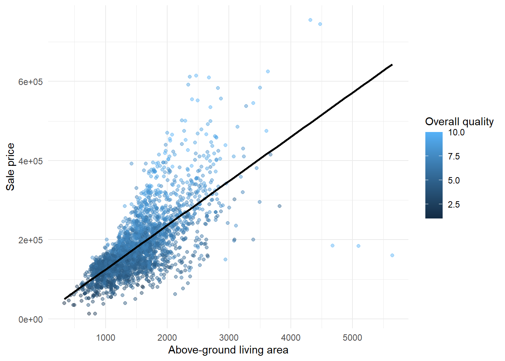
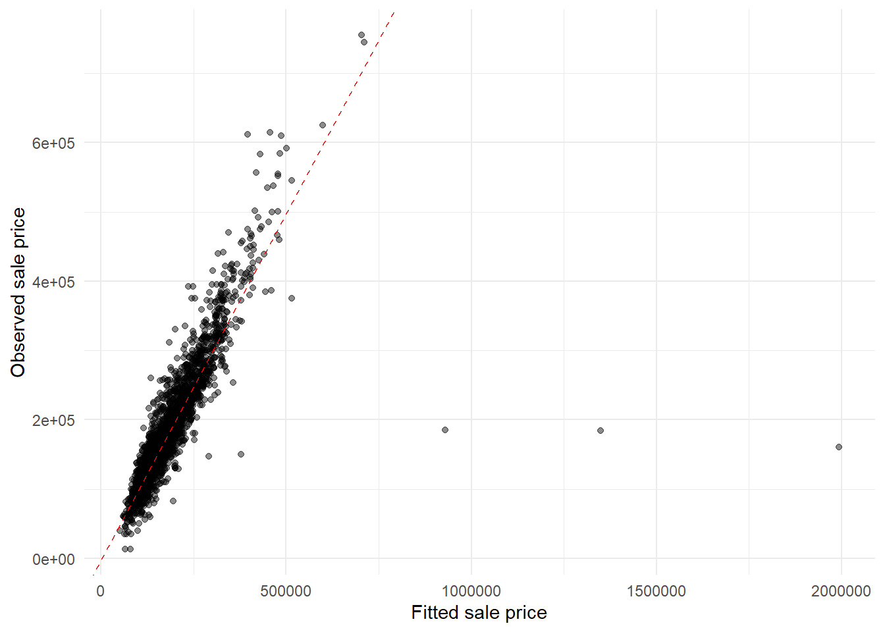

library(ggplot2)What Predicts House Sale Prices in Ames?
R
regression
housing
This short post uses the Ames Housing dataset to fit a simple multiple linear regression model for house sale price. The goal is not to build the best possible prediction model, but to check whether a few basic property features explain a useful amount of variation in prices.
Data: Ames Housing dataset, based on De Cock (2011), “Ames, Iowa: Alternative to the Boston Housing Data as an End of Semester Regression Project.” The AmesHousing package is GPL-2 licensed.
Load and select variables
I use sale price as the response variable. The predictors are overall quality, living area, basement area, garage area, lot area, and year built.
ames <- read.csv("AmesHousing.csv")
housing <- data.frame(
SalePrice = ames$SalePrice,
Overall_Qual = ames$Overall.Qual,
Gr_Liv_Area = ames$Gr.Liv.Area,
Total_Bsmt_SF = ames$Total.Bsmt.SF,
Garage_Area = ames$Garage.Area,
Lot_Area = ames$Lot.Area,
Year_Built = ames$Year.Built
)
housing <- housing[complete.cases(housing), ]
head(housing) SalePrice Overall_Qual Gr_Liv_Area Total_Bsmt_SF Garage_Area Lot_Area
1 215000 6 1656 1080 528 31770
2 105000 5 896 882 730 11622
3 172000 6 1329 1329 312 14267
4 244000 7 2110 2110 522 11160
5 189900 5 1629 928 482 13830
6 195500 6 1604 926 470 9978
Year_Built
1 1960
2 1961
3 1958
4 1968
5 1997
6 1998Quick summary
The dataset has 2,929 complete rows for these selected variables. Sale prices vary widely, so a regression model should be interpreted as a rough summary rather than a perfect pricing tool.
summary_table <- data.frame(
homes = nrow(housing),
mean_price = mean(housing$SalePrice),
median_price = median(housing$SalePrice),
mean_living_area = mean(housing$Gr_Liv_Area),
mean_overall_quality = mean(housing$Overall_Qual)
)
summary_table homes mean_price median_price mean_living_area mean_overall_quality
1 2928 180841 160000 1499.784 6.09597Figure
The figure shows a strong positive relationship between above-ground living area and sale price. The colour gradient suggests that overall quality also matters.
ggplot(housing, aes(x = Gr_Liv_Area, y = SalePrice, color = Overall_Qual)) +
geom_point(alpha = 0.45) +
geom_smooth(method = "lm", se = FALSE, color = "black") +
labs(
x = "Above-ground living area",
y = "Sale price",
color = "Overall quality"
) +
theme_minimal()`geom_smooth()` using formula = 'y ~ x'
Multiple linear regression
The model uses a small set of interpretable predictors. I include log(SalePrice) because house prices are right-skewed and percentage-style changes are easier to interpret.
model <- lm(
log(SalePrice) ~ Overall_Qual + Gr_Liv_Area + Total_Bsmt_SF +
Garage_Area + Lot_Area + Year_Built,
data = housing
)
summary(model)
Call:
lm(formula = log(SalePrice) ~ Overall_Qual + Gr_Liv_Area + Total_Bsmt_SF +
Garage_Area + Lot_Area + Year_Built, data = housing)
Residuals:
Min 1Q Median 3Q Max
-2.52257 -0.07434 0.01100 0.09216 0.66267
Coefficients:
Estimate Std. Error t value Pr(>|t|)
(Intercept) 5.441e+00 2.610e-01 20.847 <2e-16 ***
Overall_Qual 1.176e-01 3.523e-03 33.383 <2e-16 ***
Gr_Liv_Area 2.301e-04 8.294e-06 27.748 <2e-16 ***
Total_Bsmt_SF 1.113e-04 9.127e-06 12.194 <2e-16 ***
Garage_Area 2.159e-04 1.941e-05 11.123 <2e-16 ***
Lot_Area 3.854e-06 4.300e-07 8.963 <2e-16 ***
Year_Built 2.668e-03 1.372e-04 19.448 <2e-16 ***
---
Signif. codes: 0 '***' 0.001 '**' 0.01 '*' 0.05 '.' 0.1 ' ' 1
Residual standard error: 0.1706 on 2921 degrees of freedom
Multiple R-squared: 0.8251, Adjusted R-squared: 0.8247
F-statistic: 2296 on 6 and 2921 DF, p-value: < 2.2e-16Model diagnostics
The fitted-versus-observed plot shows that the model captures the main price pattern, although expensive homes still have more spread. This is expected for a simple MVLR model with only a few predictors.
housing$fitted_price <- exp(fitted(model))
ggplot(housing, aes(x = fitted_price, y = SalePrice)) +
geom_point(alpha = 0.45) +
geom_abline(slope = 1, intercept = 0, color = "red", linetype = "dashed") +
labs(
x = "Fitted sale price",
y = "Observed sale price"
) +
theme_minimal()
Takeaway
Overall quality and living area are the clearest positive predictors in this simple model. Basement size, garage area, lot area, and year built add extra information, but the model is still only a compact summary of prices rather than a full appraisal model.